Visualize feature expression and statistics across cell groups
Source:R/featurestatplot.R
FeatureStatPlot.RdA central question in single-cell analysis is how features — genes, gene
signatures, module scores, or other molecular measurements — vary across cell
types, conditions, or experimental groups. FeatureStatPlot answers this
question by providing eight complementary visualization types, each suited to
a different analytical perspective:
violin — Violin plot showing the full distribution of feature values per identity group. Best for comparing expression distributions and detecting bimodality or outliers.
box — Box plot summarizing feature values with quartiles and outliers. A compact alternative to the violin plot.
bar — Bar chart of aggregated feature values (default: mean) per group. Useful for summary-level comparisons with error bars.
ridge — Ridge (joy) plot showing density curves per group. Effective when comparing many groups or when distribution shape matters.
dim — Dimensionality reduction plot (UMAP, t-SNE, PCA) with cells colored by feature expression. Reveals spatial patterns of gene expression in the reduced space.
cor — Correlation plot between two features (scatter with fitted line and annotations) or among multiple features (pairs plot). Reveals co-expression relationships.
heatmap — Heatmap of feature expression across identity groups. Supports rich annotations (row/column metadata, bar charts, pie charts, violin plots) and flexible clustering. The go-to choice for visualizing many features across many groups.
dot — Dot plot (a shortcut for heatmap with
cell_type = "dot") where dot size reflects the fraction of expressing cells and dot color reflects mean expression. A compact, publication-ready format for marker gene visualization.
The function is an S3 generic with methods for Seurat objects,
Giotto objects, AnnData (.h5ad) file paths, and H5File objects
(via hdf5r). Each method extracts the relevant expression matrix and
metadata, then delegates to the internal .feature_stat_plot() which
dispatches to the appropriate plotthis plotting function.
Usage
FeatureStatPlot(
object,
features,
plot_type = c("violin", "box", "bar", "ridge", "dim", "cor", "heatmap", "dot"),
spat_unit = NULL,
feat_type = NULL,
downsample = NULL,
pos_only = c("no", "any", "all"),
reduction = NULL,
graph = NULL,
bg_cutoff = 0,
dims = 1:2,
rows_name = "Features",
ident = NULL,
assay = NULL,
layer = NULL,
agg = mean,
group_by = NULL,
split_by = NULL,
facet_by = NULL,
xlab = NULL,
ylab = NULL,
x_text_angle = NULL,
...
)Arguments
- object
An object containing single-cell expression data. Supported types: a Seurat object, a Giotto object, a character path to an
.h5adfile, or an openedH5Fileobject from the hdf5r package.- features
A character vector or a named list of character vectors specifying the features to plot. Features can be gene names, gene signature scores, or any column present in the expression matrix or metadata. Named lists (e.g.,
list(Beta = c("Ins1", "Ins2"))) enable automatic row grouping in heatmap and dot plots.- plot_type
Character. The type of plot to generate. One of:
"violin","box","bar","ridge","dim","cor","heatmap", or"dot". See the Description section for guidance on choosing a plot type. Default:"violin".- spat_unit
Character. The spatial unit to extract data from. Only applicable to Giotto objects. Default:
NULL(auto-detected by Giotto).- feat_type
Character. The feature type to extract (e.g.,
"rna","dna","protein"). Only applicable to Giotto objects. Default:NULL(auto-detected by Giotto).- downsample
Numeric. Number or fraction of cells to downsample to per identity group. Used for
"violin","box", and"ridge"plot types to reduce overplotting in large datasets:If
downsample > 1: Exact number of cells per group.If
0 < downsample <= 1: Fraction of cells per group.
Downsampling is performed within each identity group (via
dplyr::slice_sample(by = ident)). Default:NULL(no downsampling).- pos_only
Character. Whether to restrict to cells with positive feature values:
"no"— Include all cells (default)."any"— Include cells where at least one feature is > 0."all"— Include only cells where all features are > 0.
For named feature lists, filtering is applied to all flattened features.
- reduction
Character. Name of the dimensionality reduction to use (e.g.,
"umap","tsne","pca"). Required whenplot_type = "dim"; optional for other types where the reduction coordinates can be used as feature values. For Seurat objects, defaults to the default reduction if available. Default:NULL.- graph
Character or
TRUE. A graph (nearest-neighbor network) name to overlay edges between connected cells on the dim plot. For Seurat objects, the name should exist inobject@graphs. For Giotto objects, the name should exist in the nearest network list. IfTRUE, the first available graph is used. Only used whenplot_type = "dim". Default:NULL(no edges).- bg_cutoff
Numeric. Expression cutoff for the background in dim plots. Cells with expression below this value are shown in the background color (typically gray). Set to
-Infto color all cells. Only used whenplot_type = "dim". Default:0.- dims
Integer vector of length 2. The dimensions (columns) of the reduction to plot on the x and y axes. Only used when
plot_type = "dim". Default:1:2.- rows_name
Character. The column name used to identify feature rows in the heatmap and as the key when merging
rows_data. Only used whenplot_type = "heatmap"or"dot". Default:"Features".- ident
Character. The metadata column name identifying cell groups (e.g.,
"CellType","SubCellType","seurat_clusters"). Used as the x-axis for violin, box, bar, and ridge plots; as the heatmap columns for heatmap and dot plots; and as the grouping variable for correlation plots. For Seurat objects, defaults to the active identity ("Identity"). Required for non-dim plots on Giotto and H5File objects. Default:NULL.- assay
Character. The assay name to extract feature data from (e.g.,
"RNA","SCT","integrated"). For Seurat objects, passed toSeuratObject::GetAssayData(). For H5File objects, determines whether to read fromX(whenassay = "RNA") orlayers/<assay>. Not applicable to Giotto objects. Default:NULL.- layer
Character. The layer name within the assay to extract data from (e.g.,
"data","counts","scale.data"). For Seurat objects, passed toSeuratObject::GetAssayData(). For Giotto objects, passed toGiottoClass::getExpression(). Default:NULL.- agg
Function. The aggregation function applied when
plot_type = "bar". Common choices:mean(default),median,sum. Applied within each group defined byident,group_by, andsplit_by.- group_by
Character. A metadata column name to further subdivide cells within each identity group (e.g., coloring by treatment within cell type). Works with
"violin","box","bar", and"ridge"plot types. Default:NULL.- split_by
Character vector or
TRUE. Metadata column name(s) to split the data into separate plots (one per unique value). IfTRUE, splits by the features themselves, creating one plot per feature. Multiple columns are concatenated. Default:NULL.- facet_by
Character vector. Metadata column name(s) to facet the data within a plot. Note: for
"violin","box","bar", and"ridge"plot types,facet_byshould always beNULLbecause the plot is already faceted by features. Works normally with"dim","heatmap","dot", and"cor"plot types. Default:NULL.- xlab
Character. Custom x-axis label. Default:
NULL(auto-generated based on plot type).- ylab
Character. Custom y-axis label. Default:
NULL(auto-generated based on plot type).- x_text_angle
Numeric. Angle (in degrees) for x-axis text labels. Used for
"violin","box", and"bar"plot types. Default:NULL(defaults to45).- ...
Additional arguments passed to the underlying plotthis plotting function, determined by
plot_type:"violin""box""bar""ridge""dim""heatmap""dot"plotthis::Heatmap()withcell_type = "dot""cor"plotthis::CorPlot()(2 features) orplotthis::CorPairsPlot()(3+ features)
Common arguments include
palette,flip,add_bg,add_point,add_box,stack,comparisons,theme,legend.position, and many more — see the documentation of the specific plotthis function for details.
Value
A ggplot object (or a patchwork object when
split_by generates multiple plots and combine = TRUE), or
a list of ggplot objects if combine = FALSE. The specific return
type depends on the underlying plotthis function dispatched by
plot_type.
Note
For
"violin","box","bar", and"ridge"plot types, the data is automatically pivoted from wide to long format and features are faceted. Do not usefacet_bywith these types — usesplit_byinstead.For
"heatmap"and"dot"plot types, named feature lists are automatically converted to arows_datadata frame withrows_split_byset. You can also provide your ownrows_datafor richer annotations (e.g., TF status, CSPA membership).The
dotplot type is a convenience shortcut forplot_type = "heatmap"withcell_type = "dot". It pre-configures sensible defaults: dot size = fraction of expressing cells, dot color = mean expression, reticle added, no clustering.For
"dim"plots withgraph, edges are drawn between connected cells. This helps reveal whether feature expression follows the neighborhood structure (e.g., continuous gradients vs scattered expression).When
identis not specified for Seurat objects, the active identity (Idents(object)) is used automatically.Giotto objects require
spat_unitandfeat_typeto locate the correct expression matrix and metadata.
Input objects
FeatureStatPlot supports four input types, each handled by its own
S3 method:
Seurat (
FeatureStatPlot.Seurat) — UsesSeuratObject::GetAssayData()to extract expression data and@meta.datafor cell metadata. Reductions are accessed viaSeuratObject::Embeddings().Giotto (
FeatureStatPlot.giotto) — UsesGiottoClass::getExpression()andGiottoClass::getCellMetadata(). Requiresspat_unitandfeat_typeparameters..h5ad path (
FeatureStatPlot.character) — Opens the file via hdf5r, then delegates toFeatureStatPlot.H5File. Currently only.h5ad(AnnData) files are supported.H5File (
FeatureStatPlot.H5File) — Reads expression fromX(orlayers/<assay>), cell metadata fromobs, and reductions fromobsm.
Feature specification
Features can be provided as:
A character vector — e.g.,
c("Sox9", "Neurog3", "Ins1"). All features are treated equally.A named list — e.g.,
list(Ductal = c("Sox9", "Anxa2"), Endocrine = c("Ins1", "Gcg")). The names are used as row group annotations in heatmap and dot plots (viarows_split_by), automatically creating arows_datadata frame that maps each feature to its group. This is especially useful for organizing marker genes by cell type.
When pos_only is "any" or "all", cells are filtered
based on whether they have positive values for the specified features.
For named feature lists, the filter applies to the flattened set of all
features.
Faceting and splitting behavior
For most plot types ("violin", "box", "bar",
"ridge"), features are automatically faceted — each feature appears
in its own panel. The facet_by parameter is therefore restricted
for these types. Use split_by (or split_by = TRUE to split
by feature) for creating separate plots per category. For "dim",
"heatmap", "dot", and "cor" plots, features are
incorporated into a single visualization and split_by/facet_by
behave normally.
Examples
# \donttest{
data(pancreas_sub)
FeatureStatPlot(pancreas_sub, features = c("G2M_score", "nCount_RNA"),
ident = "SubCellType", facet_scales = "free_y")
FeatureStatPlot(pancreas_sub, features = c("G2M_score", "nCount_RNA"),
ident = "SubCellType", plot_type = "box", facet_scales = "free_y")
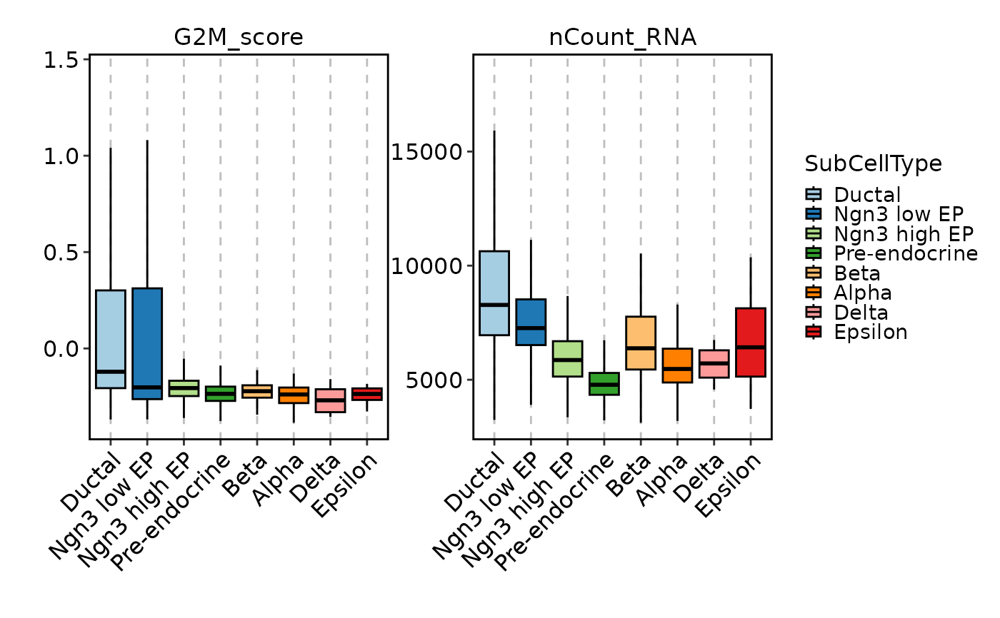
FeatureStatPlot(pancreas_sub, features = c("G2M_score", "nCount_RNA"),
ident = "SubCellType", plot_type = "bar", facet_scales = "free_y")
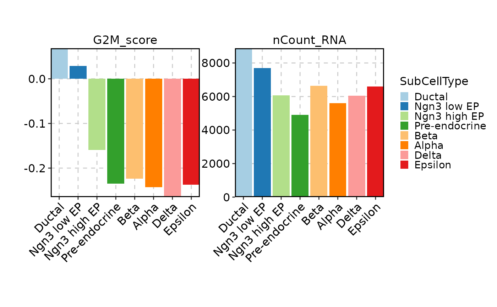
FeatureStatPlot(pancreas_sub, features = c("G2M_score", "nCount_RNA"),
ident = "SubCellType", plot_type = "ridge", flip = TRUE, facet_scales = "free_y")
#> Picking joint bandwidth of 0.0498
#> Picking joint bandwidth of 516
#> Picking joint bandwidth of 0.0498
#> Picking joint bandwidth of 516
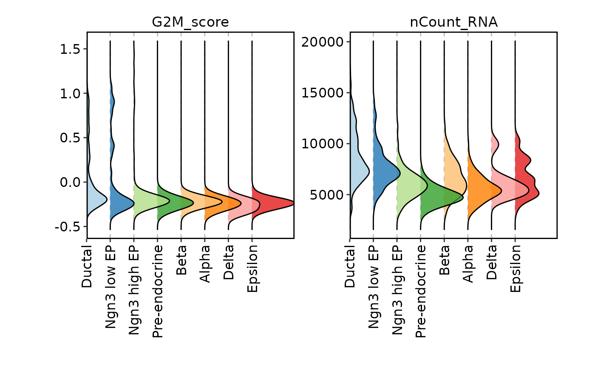
FeatureStatPlot(pancreas_sub, features = c("G2M_score", "nCount_RNA"),
ident = "SubCellType", facet_scales = "free_y", add_point = TRUE)
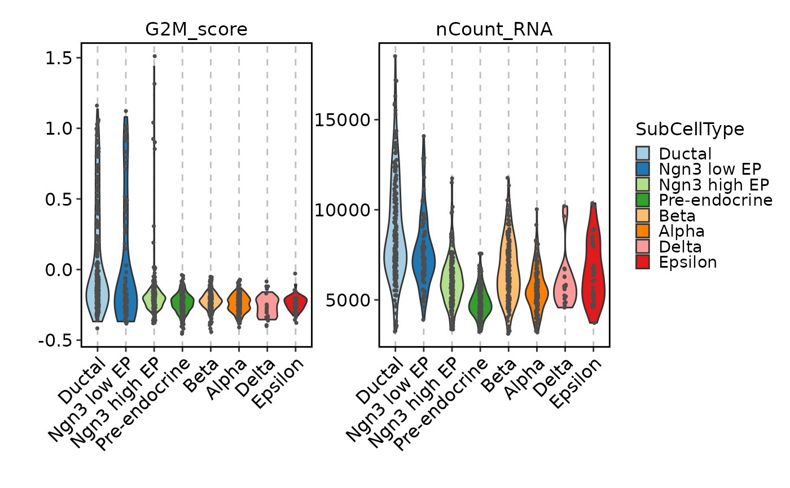
FeatureStatPlot(pancreas_sub, features = c("G2M_score", "nCount_RNA"),
ident = "SubCellType", facet_scales = "free_y", add_trend = TRUE)
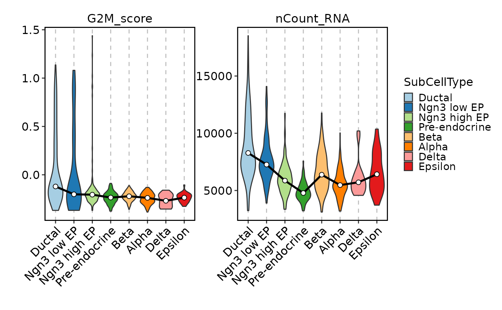
FeatureStatPlot(pancreas_sub, features = c("G2M_score", "nCount_RNA"),
ident = "SubCellType", facet_scales = "free_y", add_stat = mean)
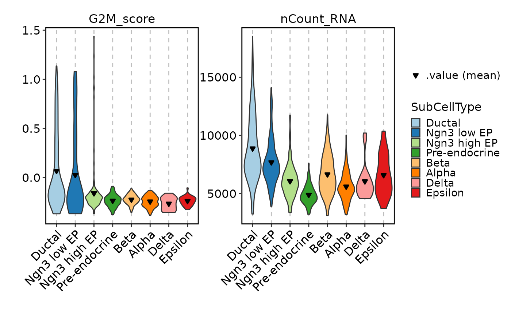
FeatureStatPlot(pancreas_sub, features = c("G2M_score", "nCount_RNA"),
ident = "SubCellType", facet_scales = "free_y", group_by = "Phase")
#> Warning: Groups with fewer than two datapoints have been dropped.
#> ℹ Set `drop = FALSE` to consider such groups for position adjustment purposes.
#> Warning: Groups with fewer than two datapoints have been dropped.
#> ℹ Set `drop = FALSE` to consider such groups for position adjustment purposes.
#> Warning: Groups with fewer than two datapoints have been dropped.
#> ℹ Set `drop = FALSE` to consider such groups for position adjustment purposes.
#> Warning: Groups with fewer than two datapoints have been dropped.
#> ℹ Set `drop = FALSE` to consider such groups for position adjustment purposes.
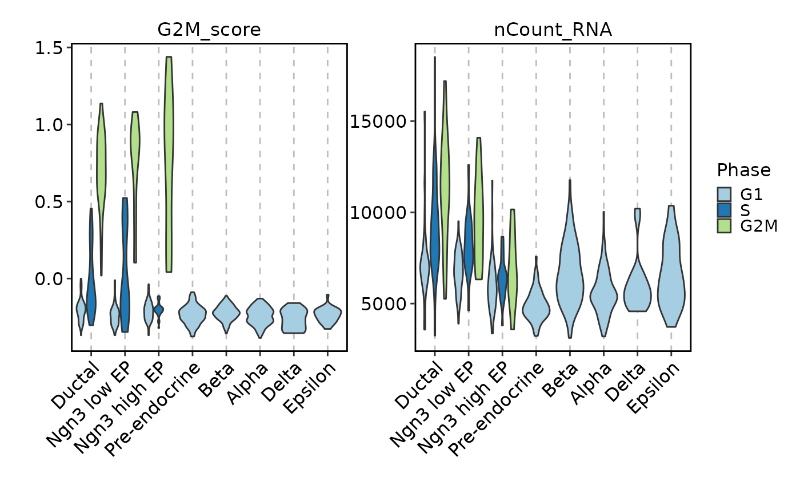
if (requireNamespace("ggpubr", quietly = TRUE)) {
# https://github.com/kassambara/ggpubr/issues/751
library(ggpubr)
FeatureStatPlot(
subset(pancreas_sub,
subset = SubCellType %in% c("Ductal", "Ngn3 low EP", "Ngn3 high EP")),
features = c("G2M_score"),
ident = "SubCellType", group_by = "Phase", comparisons = TRUE)
}
#> Loading required package: ggplot2
#> Detected more than 2 groups. Use multiple_method for comparison
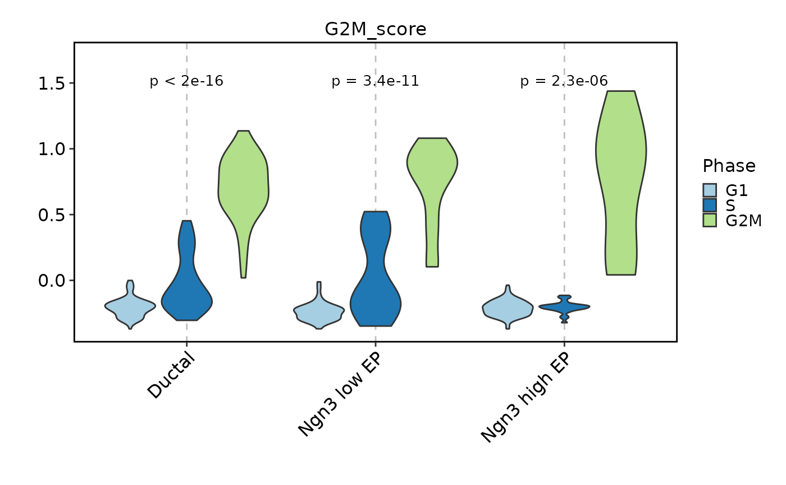
FeatureStatPlot(pancreas_sub, features = c("Rbp4", "Pyy"), ident = "SubCellType",
add_bg = TRUE, add_box = TRUE, stack = TRUE)
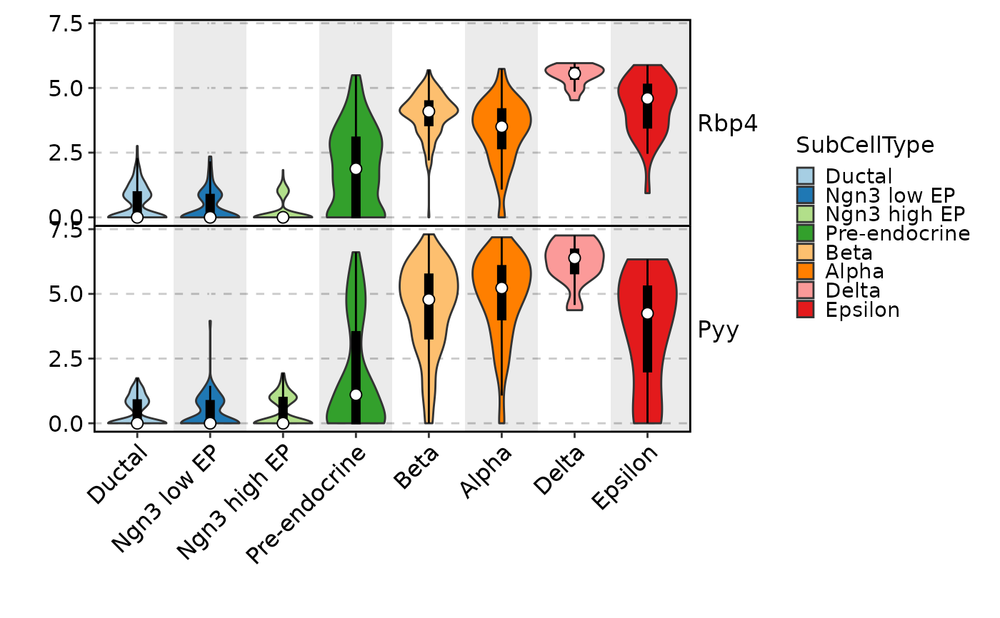
# Use `pos_only` to include only cells with positive expression of all features
FeatureStatPlot(pancreas_sub, features = c("Rbp4", "Pyy"), ident = "SubCellType",
add_bg = TRUE, add_box = TRUE, stack = TRUE, pos_only = "all")
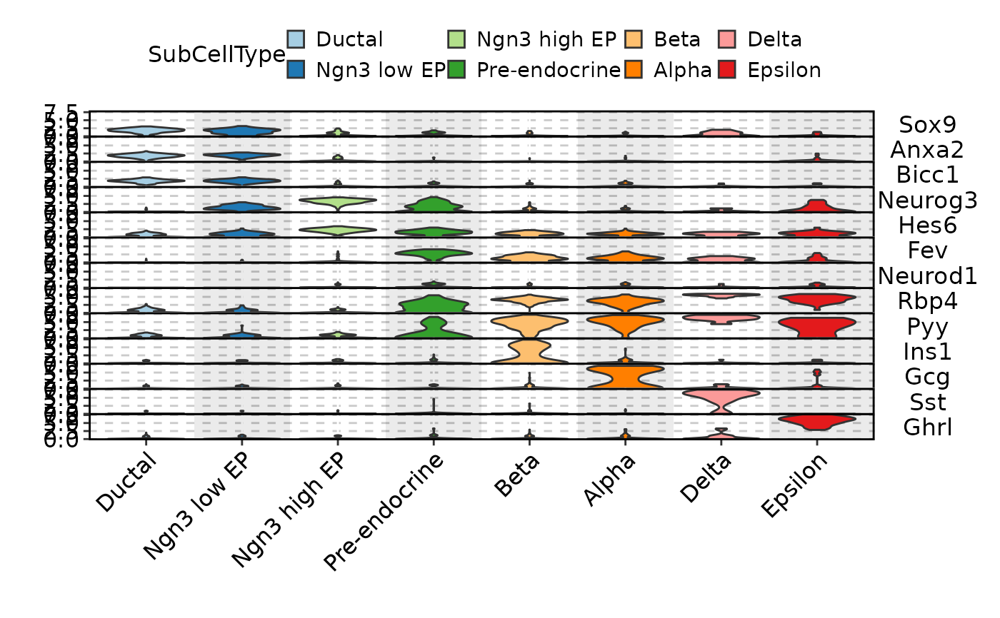
FeatureStatPlot(pancreas_sub, features = c(
"Sox9", "Anxa2", "Bicc1", # Ductal
"Neurog3", "Hes6", # EPs
"Fev", "Neurod1", # Pre-endocrine
"Rbp4", "Pyy", # Endocrine
"Ins1", "Gcg", "Sst", "Ghrl" # Beta, Alpha, Delta, Epsilon
), ident = "SubCellType", add_bg = TRUE, stack = TRUE,
legend.position = "top", legend.direction = "horizontal")
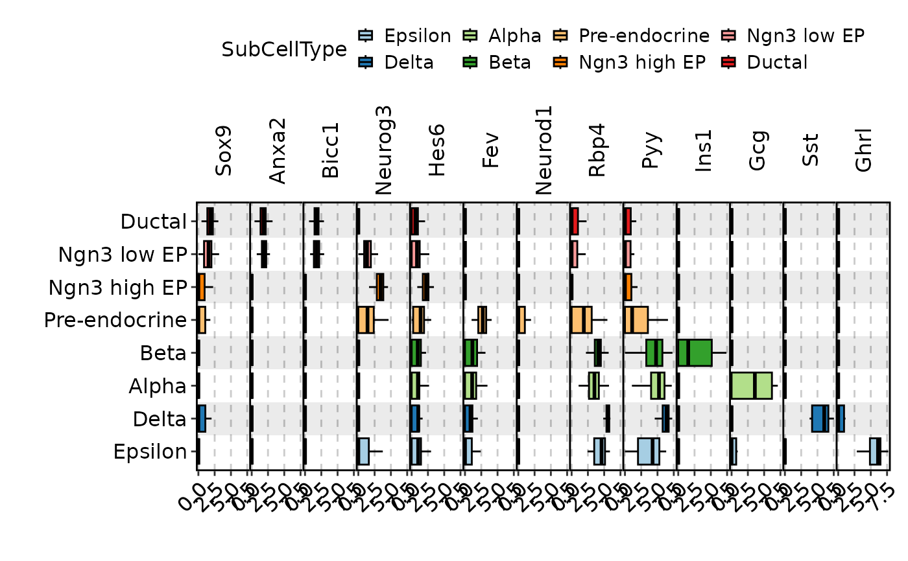
FeatureStatPlot(pancreas_sub, plot_type = "box", features = c(
"Sox9", "Anxa2", "Bicc1", # Ductal
"Neurog3", "Hes6", # EPs
"Fev", "Neurod1", # Pre-endocrine
"Rbp4", "Pyy", # Endocrine
"Ins1", "Gcg", "Sst", "Ghrl" # Beta, Alpha, Delta, Epsilon
), ident = "SubCellType", add_bg = TRUE, stack = TRUE, flip = TRUE,
legend.position = "top", legend.direction = "horizontal")
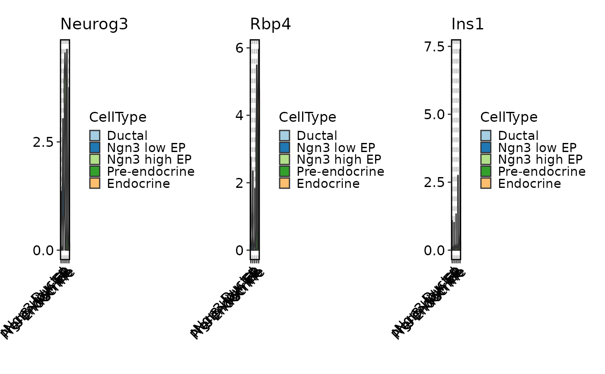
# Use splitting instead of facetting
FeatureStatPlot(pancreas_sub, features = c("Neurog3", "Rbp4", "Ins1"),
ident = "CellType", split_by = TRUE)
 FeatureStatPlot(pancreas_sub, plot_type = "dim", features = "G2M_score", reduction = "UMAP")
FeatureStatPlot(pancreas_sub, plot_type = "dim", features = "G2M_score", reduction = "UMAP")
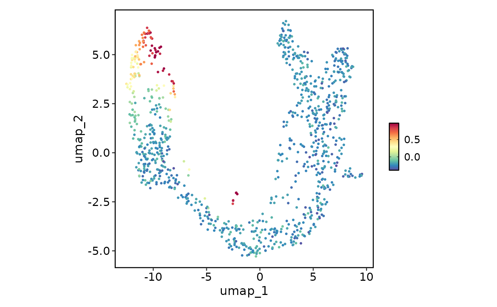
FeatureStatPlot(pancreas_sub, plot_type = "dim", features = "G2M_score", reduction = "UMAP",
bg_cutoff = -Inf)
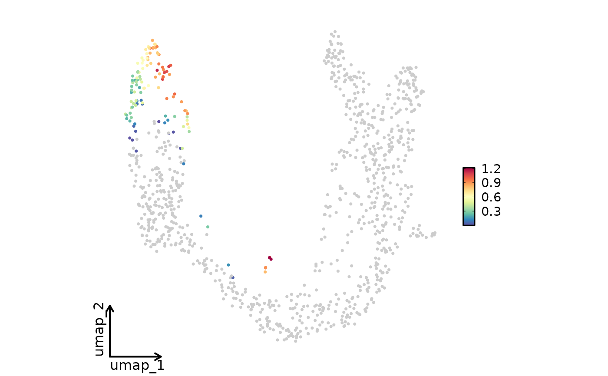
FeatureStatPlot(pancreas_sub, plot_type = "dim", features = "G2M_score", reduction = "UMAP",
theme = "theme_blank")
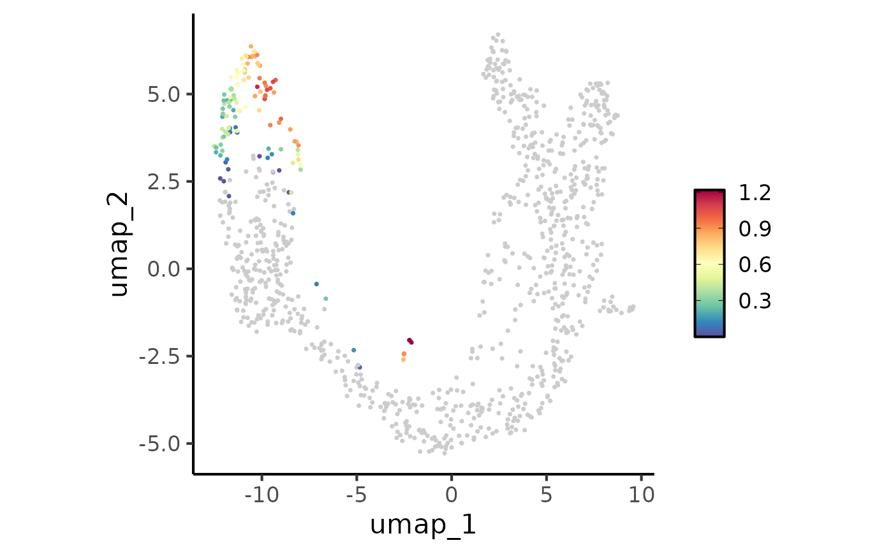
FeatureStatPlot(pancreas_sub, plot_type = "dim", features = "G2M_score", reduction = "UMAP",
theme = ggplot2::theme_classic, theme_args = list(base_size = 16))
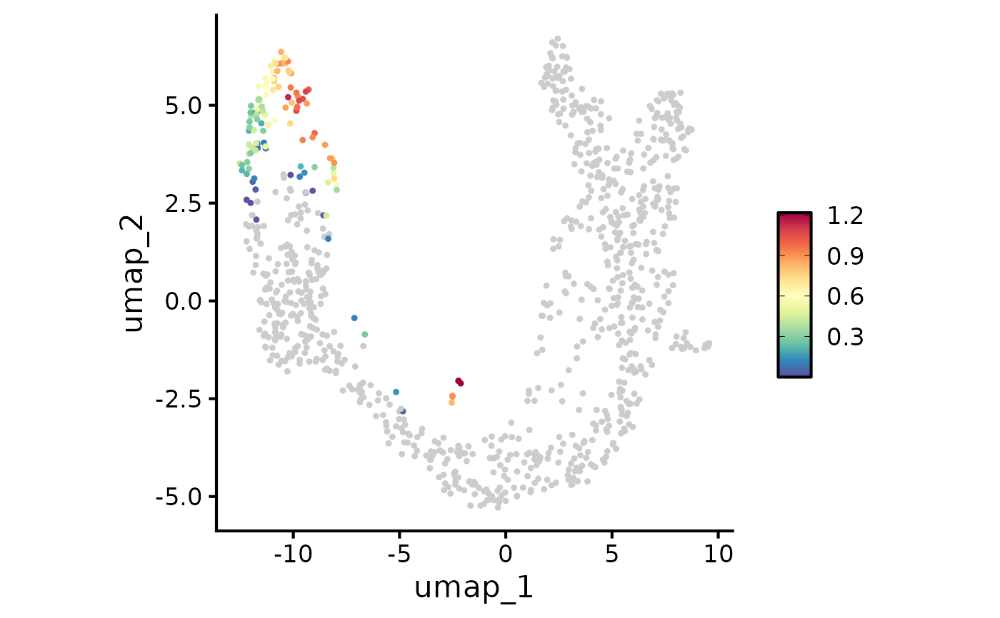
# Label and highlight cell points
FeatureStatPlot(pancreas_sub, plot_type = "dim", features = "Rbp4", reduction = "UMAP",
highlight = 'SubCellType == "Delta"')
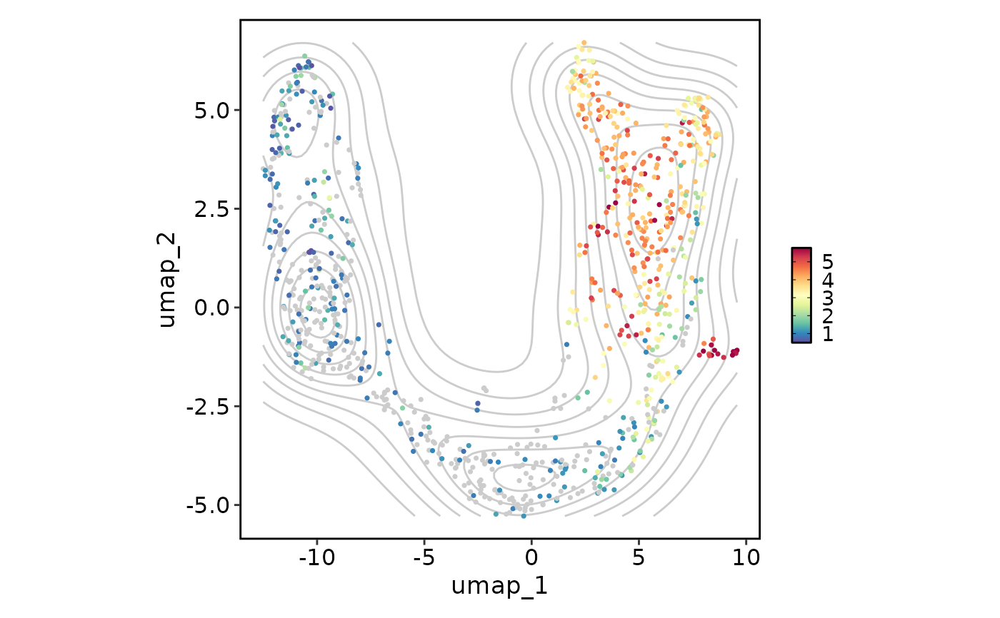
FeatureStatPlot(pancreas_sub, plot_type = "dim",
features = "Rbp4", split_by = "Phase", reduction = "UMAP",
highlight = TRUE, theme = "theme_blank")
 # Add a density layer
FeatureStatPlot(pancreas_sub, plot_type = "dim", features = "Rbp4", reduction = "UMAP",
add_density = TRUE)
# Add a density layer
FeatureStatPlot(pancreas_sub, plot_type = "dim", features = "Rbp4", reduction = "UMAP",
add_density = TRUE)
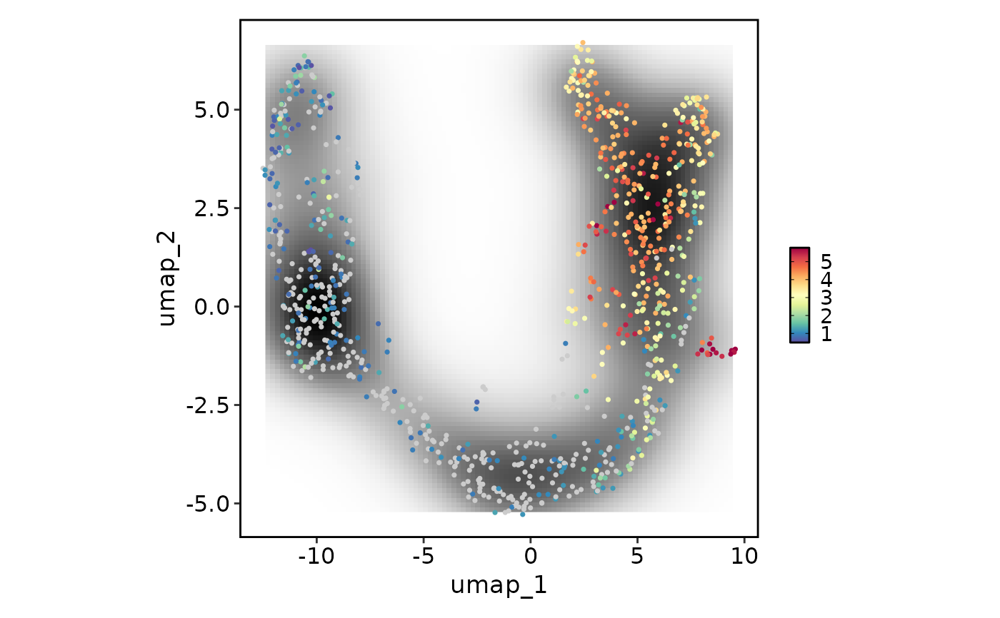
FeatureStatPlot(pancreas_sub, plot_type = "dim", features = "Rbp4", reduction = "UMAP",
add_density = TRUE, density_filled = TRUE)
#> Warning: Removed 396 rows containing missing values or values outside the scale range
#> (`geom_raster()`).
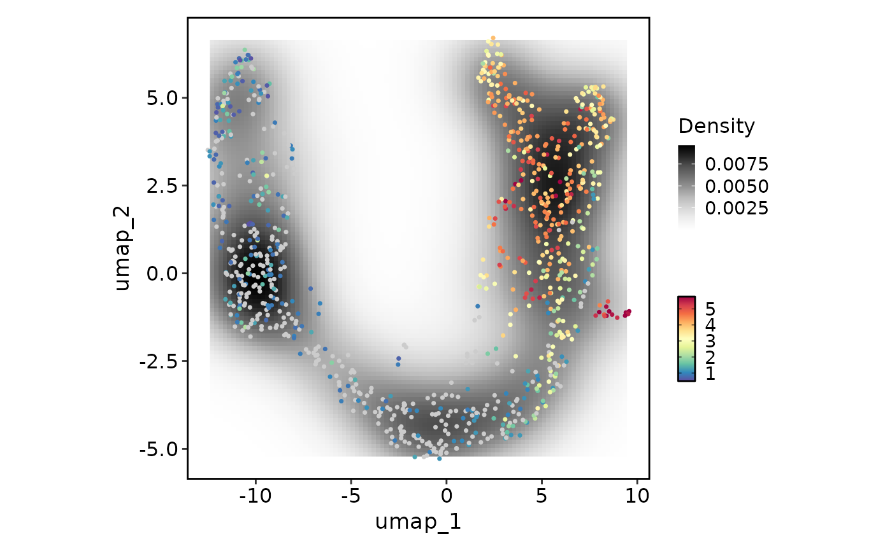
# Change the plot type from point to the hexagonal bin
FeatureStatPlot(pancreas_sub, plot_type = "dim", features = "Rbp4", reduction = "UMAP",
hex = TRUE)
#> Warning: Removed 4 rows containing missing values or values outside the scale range
#> (`geom_hex()`).
 FeatureStatPlot(pancreas_sub, plot_type = "dim", features = "Rbp4", reduction = "UMAP",
hex = TRUE, hex_bins = 20)
#> Warning: Removed 3 rows containing missing values or values outside the scale range
#> (`geom_hex()`).
#> Warning: Removed 5 rows containing missing values or values outside the scale range
#> (`geom_hex()`).
FeatureStatPlot(pancreas_sub, plot_type = "dim", features = "Rbp4", reduction = "UMAP",
hex = TRUE, hex_bins = 20)
#> Warning: Removed 3 rows containing missing values or values outside the scale range
#> (`geom_hex()`).
#> Warning: Removed 5 rows containing missing values or values outside the scale range
#> (`geom_hex()`).
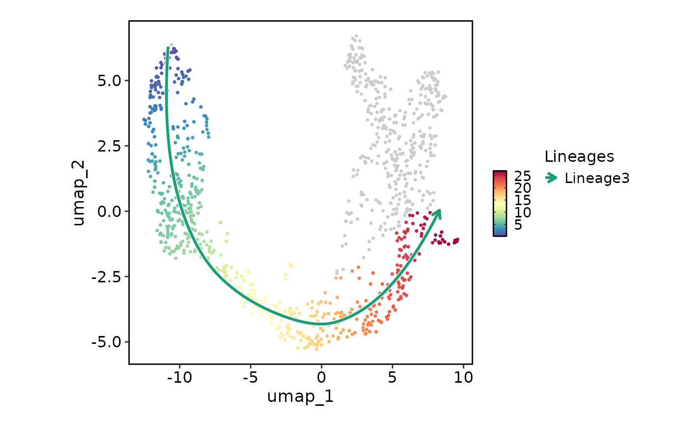
# Show lineages on the plot based on the pseudotime
FeatureStatPlot(pancreas_sub, plot_type = "dim", features = "Lineage3", reduction = "UMAP",
lineages = "Lineage3")
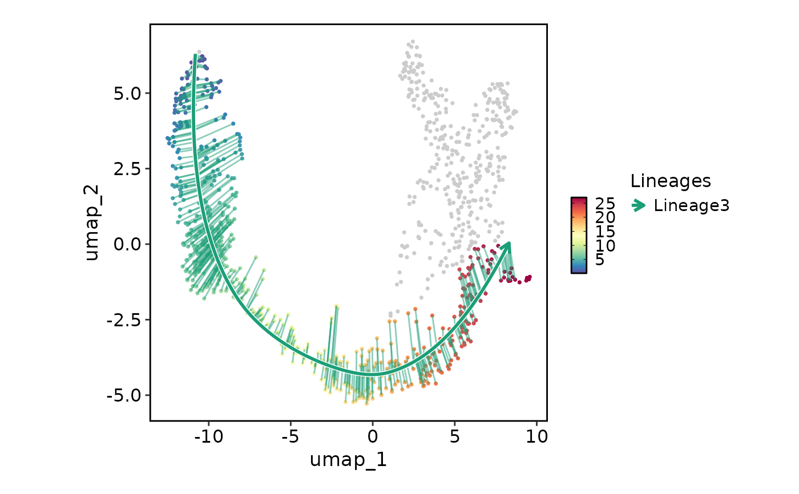
FeatureStatPlot(pancreas_sub, plot_type = "dim", features = "Lineage3", reduction = "UMAP",
lineages = "Lineage3", lineages_whiskers = TRUE)
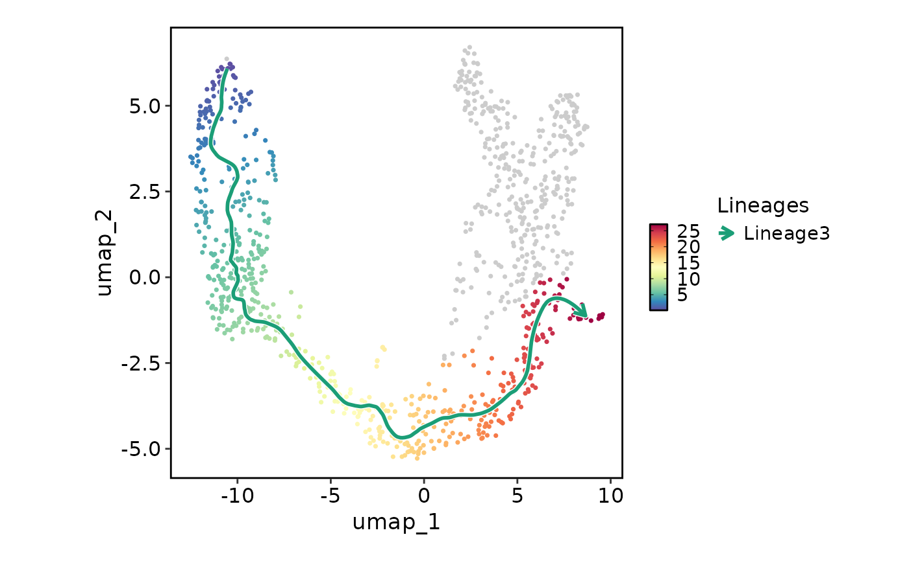
FeatureStatPlot(pancreas_sub, plot_type = "dim", features = "Lineage3", reduction = "UMAP",
lineages = "Lineage3", lineages_span = 0.1)
 FeatureStatPlot(pancreas_sub, plot_type = "dim",
features = c("Sox9", "Anxa2", "Bicc1"), reduction = "UMAP",
theme = "theme_blank",
theme_args = list(plot.subtitle = ggplot2::element_text(size = 10),
strip.text = ggplot2::element_text(size = 8))
)
FeatureStatPlot(pancreas_sub, plot_type = "dim",
features = c("Sox9", "Anxa2", "Bicc1"), reduction = "UMAP",
theme = "theme_blank",
theme_args = list(plot.subtitle = ggplot2::element_text(size = 10),
strip.text = ggplot2::element_text(size = 8))
)
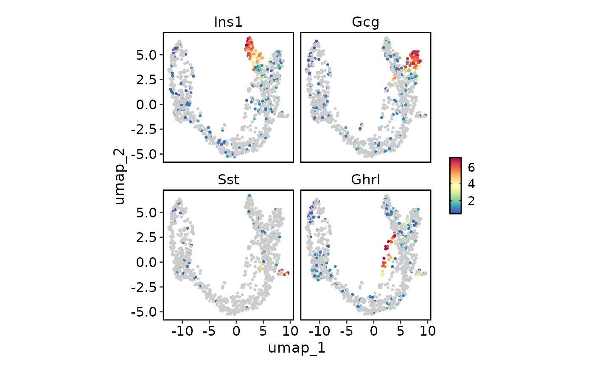
# Plot multiple features with different scales
endocrine_markers <- c("Ins1", "Gcg", "Sst", "Ghrl")
FeatureStatPlot(pancreas_sub, endocrine_markers, reduction = "UMAP", plot_type = "dim")
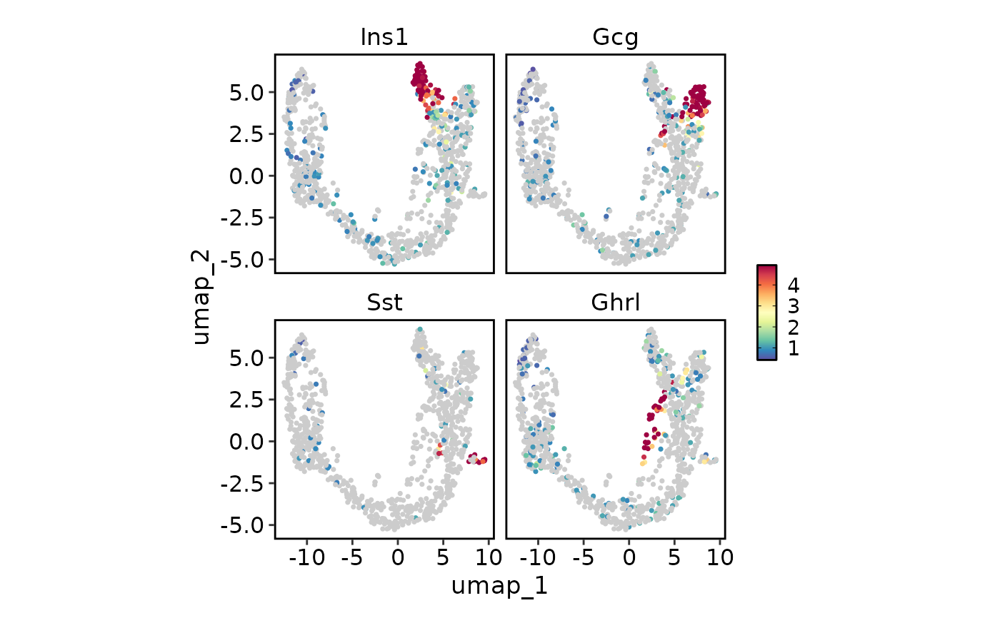
FeatureStatPlot(pancreas_sub, endocrine_markers, reduction = "UMAP", lower_quantile = 0,
upper_quantile = 0.8, plot_type = "dim")
 FeatureStatPlot(pancreas_sub, endocrine_markers, reduction = "UMAP",
lower_cutoff = 1, upper_cutoff = 4, plot_type = "dim")
FeatureStatPlot(pancreas_sub, endocrine_markers, reduction = "UMAP",
lower_cutoff = 1, upper_cutoff = 4, plot_type = "dim")
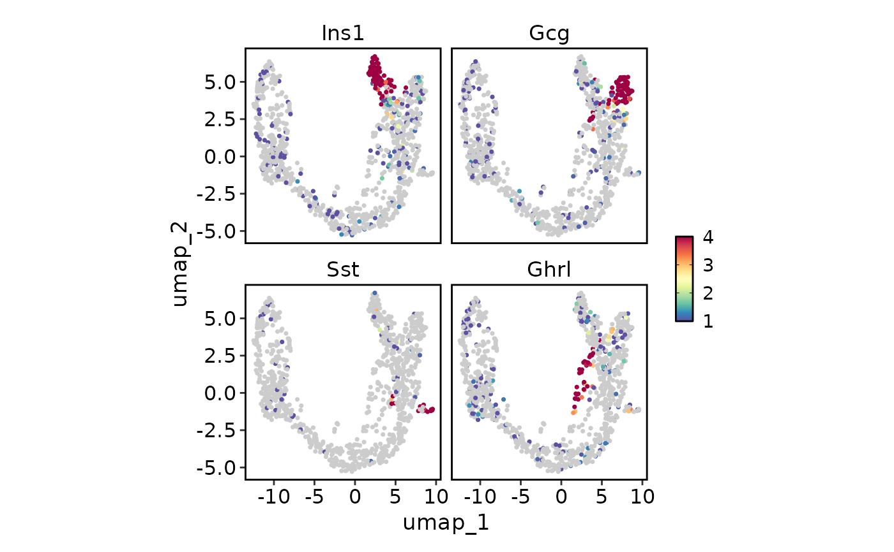
FeatureStatPlot(pancreas_sub, endocrine_markers, reduction = "UMAP", bg_cutoff = 2,
lower_cutoff = 2, upper_cutoff = 4, plot_type = "dim")
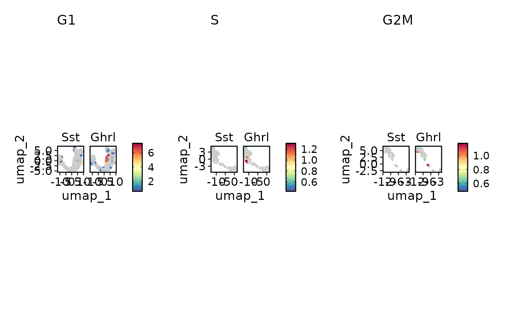
FeatureStatPlot(pancreas_sub, c("Sst", "Ghrl"), split_by = "Phase", reduction = "UMAP",
plot_type = "dim")
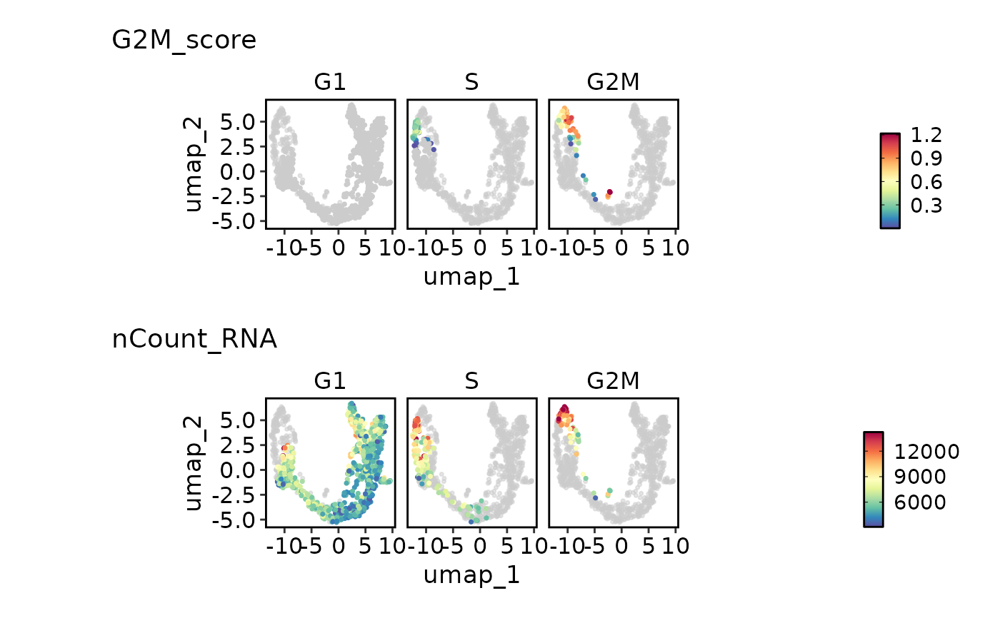
FeatureStatPlot(pancreas_sub, features = c("G2M_score", "nCount_RNA"),
ident = "SubCellType", plot_type = "dim", facet_by = "Phase", split_by = TRUE, ncol = 1)
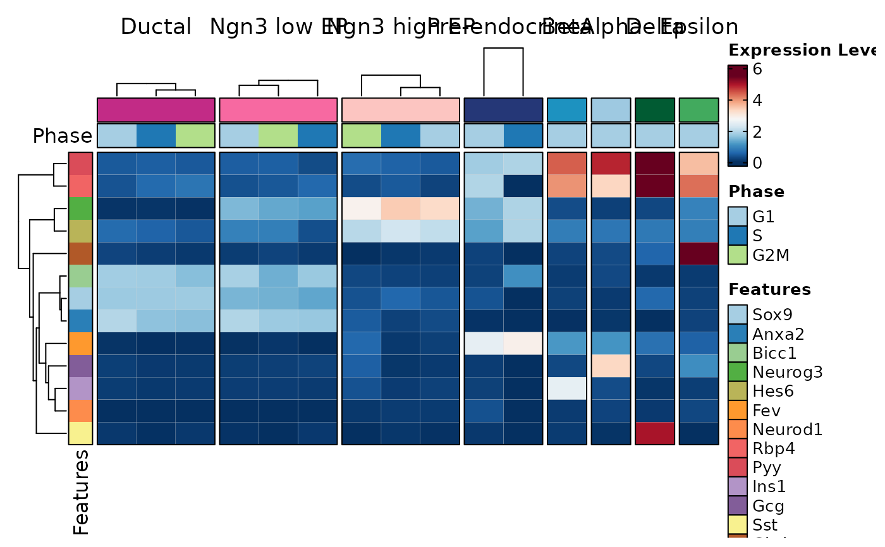
# Heatmap
features <- c(
"Sox9", "Anxa2", "Bicc1", # Ductal
"Neurog3", "Hes6", # EPs
"Fev", "Neurod1", # Pre-endocrine
"Rbp4", "Pyy", # Endocrine
"Ins1", "Gcg", "Sst", "Ghrl" # Beta, Alpha, Delta, Epsilon
)
rows_data <- data.frame(
Features = features, # 'rows_name' default is "Features"
group = c(
"Ductal", "Ductal", "Ductal", "EPs", "EPs", "Pre-endocrine",
"Pre-endocrine", "Endocrine", "Endocrine", "Beta", "Alpha", "Delta", "Epsilon"),
TF = c(TRUE, FALSE, FALSE, TRUE, FALSE, TRUE, FALSE, TRUE, FALSE, TRUE,
TRUE, TRUE, TRUE),
CSPA = c(FALSE, FALSE, FALSE, FALSE, TRUE, FALSE, FALSE, FALSE, TRUE, TRUE,
FALSE, FALSE, FALSE)
)
FeatureStatPlot(pancreas_sub, features = features, ident = "SubCellType",
plot_type = "heatmap", name = "Expression Level")
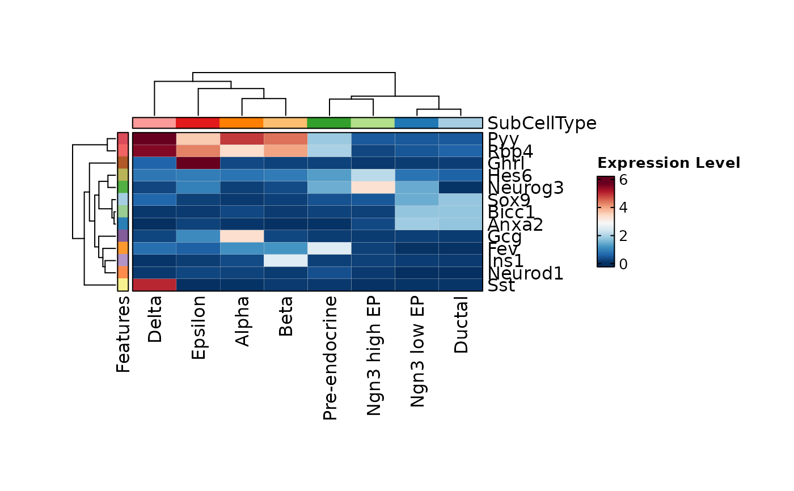
FeatureStatPlot(pancreas_sub, features = features, ident = "Phase",
plot_type = "heatmap", name = "Expression Level", columns_split_by = "SubCellType")
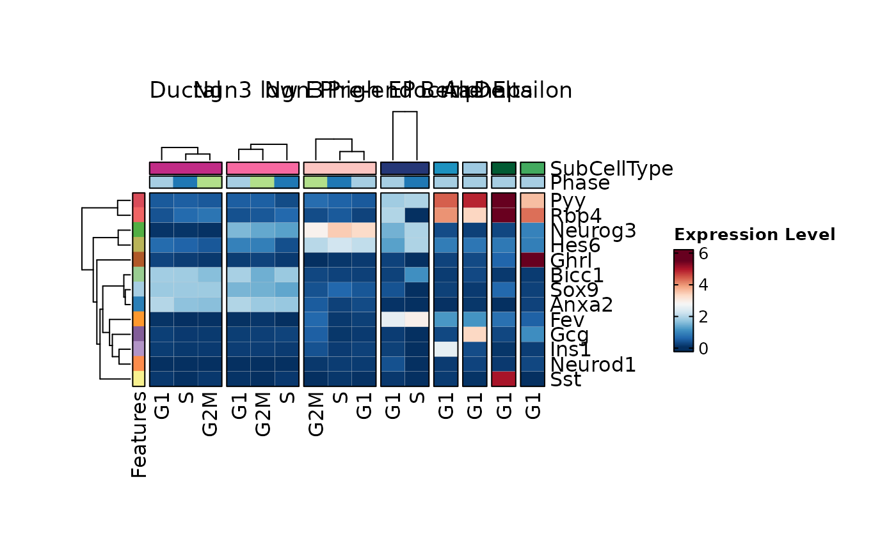
FeatureStatPlot(pancreas_sub, features = features, ident = "SubCellType",
plot_type = "heatmap", cell_type = "bars", name = "Expression Level")
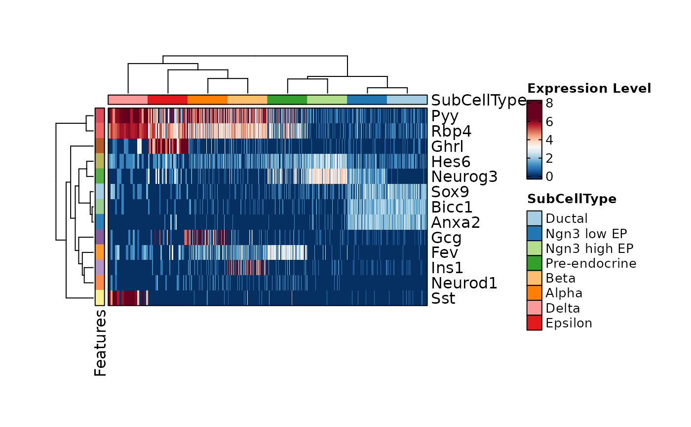
FeatureStatPlot(pancreas_sub, features = features, ident = "SubCellType", cell_type = "dot",
plot_type = "heatmap", name = "Expression Level", dot_size = function(x) sum(x > 0) / length(x),
dot_size_name = "Percent Expressed", add_bg = TRUE, rows_data = rows_data,
show_row_names = TRUE, rows_split_by = "group", cluster_rows = FALSE,
column_annotation = c("Phase", "G2M_score"),
column_annotation_type = list(Phase = "pie", G2M_score = "violin"),
column_annotation_params = list(G2M_score = list(show_legend = FALSE)),
row_annotation = c("TF", "CSPA"),
row_annotation_side = "right",
row_annotation_type = list(TF = "simple", CSPA = "simple"))
#> Warning: `row_annotation_side` is deprecated. Use `row_annotation = list(<key> = list(side = ...))` instead.
#> Warning: `row_annotation_type` is deprecated. Use `row_annotation = list(<key> = list(type = ...))` instead.
#> Warning: `column_annotation_type` is deprecated. Use `column_annotation = list(<key> = list(type = ...))` instead.
#> Warning: `column_annotation_params` is deprecated. Use `column_annotation = list(<key> = list(params = ...))` instead.
#> Warning: [Heatmap] Assuming 'row_annotation_agg["TF"] = dplyr::first' for the simple annotation
#> Warning: [Heatmap] Assuming 'row_annotation_agg["CSPA"] = dplyr::first' for the simple annotation
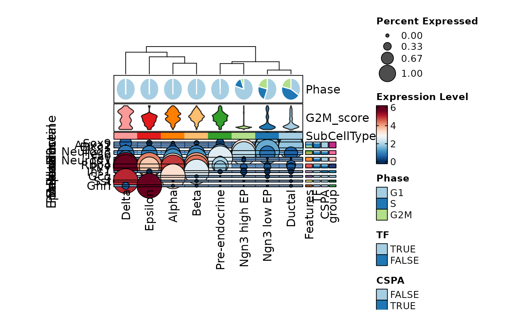
FeatureStatPlot(pancreas_sub, features = features, ident = "SubCellType", cell_type = "dot",
plot_type = "heatmap", name = "Expression Level", dot_size = function(x) sum(x > 0) / length(x),
dot_size_name = "Percent Expressed", add_bg = TRUE,
rows_data = rows_data, show_column_names = TRUE, rows_split_by = "group",
cluster_rows = FALSE, flip = TRUE, palette = "YlOrRd",
column_annotation = c("Phase", "G2M_score"),
column_annotation_type = list(Phase = "pie", G2M_score = "violin"),
column_annotation_params = list(G2M_score = list(show_legend = FALSE)),
row_annotation = c("TF", "CSPA"),
row_annotation_side = "right",
row_annotation_type = list(TF = "simple", CSPA = "simple"))
#> Warning: `row_annotation_side` is deprecated. Use `row_annotation = list(<key> = list(side = ...))` instead.
#> Warning: `row_annotation_type` is deprecated. Use `row_annotation = list(<key> = list(type = ...))` instead.
#> Warning: `column_annotation_type` is deprecated. Use `column_annotation = list(<key> = list(type = ...))` instead.
#> Warning: `column_annotation_params` is deprecated. Use `column_annotation = list(<key> = list(params = ...))` instead.
#> Warning: [Heatmap] Assuming 'row_annotation_agg["TF"] = dplyr::first' for the simple annotation
#> Warning: [Heatmap] Assuming 'row_annotation_agg["CSPA"] = dplyr::first' for the simple annotation
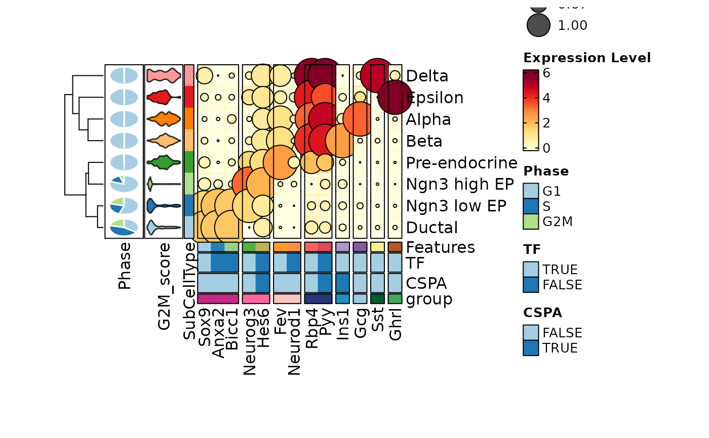
FeatureStatPlot(pancreas_sub, features = features, ident = "SubCellType", cell_type = "violin",
plot_type = "heatmap", name = "Expression Level", show_row_names = TRUE,
cluster_columns = FALSE, rows_split_by = "group", rows_data = rows_data)
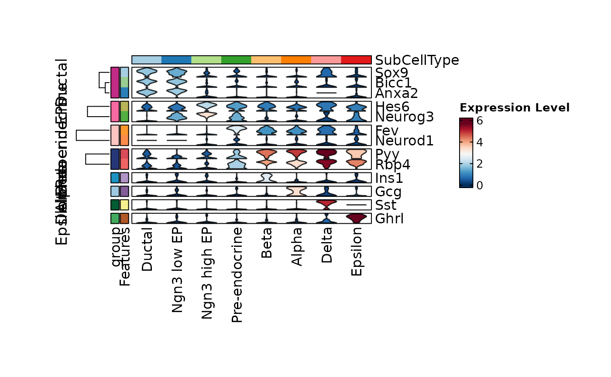
FeatureStatPlot(pancreas_sub, features = features, ident = "SubCellType", cell_type = "dot",
plot_type = "heatmap", dot_size = function(x) sum(x > 0) / length(x),
dot_size_name = "Percent Expressed", palette = "viridis", add_reticle = TRUE,
rows_data = rows_data, name = "Expression Level", show_row_names = TRUE,
rows_split_by = "group")
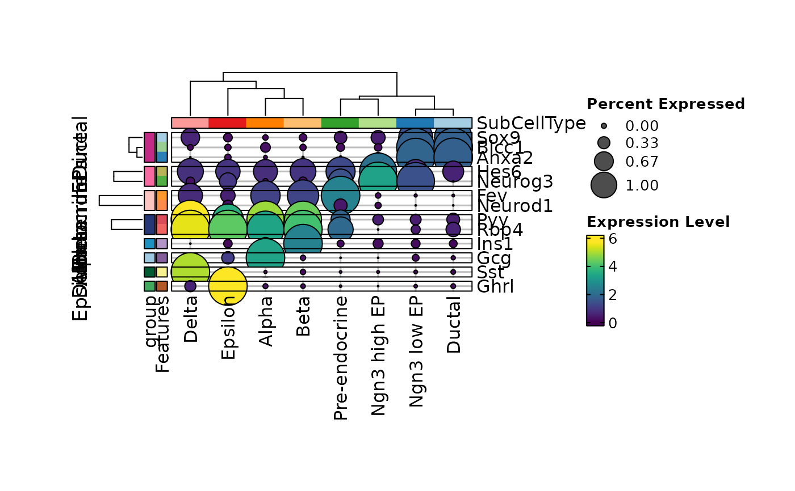
# Visualize the markers for each sub-cell type (the markers can overlap)
# Say: markers <- Seurat::FindAllMarkers(pancreas_sub, ident = "SubCellType")
markers <- data.frame(
avg_log2FC = c(
3.44, 2.93, 2.72, 2.63, 2.13, 1.97, 2.96, 1.92, 5.22, 3.91, 3.64, 4.52,
3.45, 2.45, 1.75, 2.08, 9.10, 4.45, 3.61, 6.30, 4.96, 3.49, 3.91, 3.90,
10.58, 5.84, 4.73, 3.34, 7.22, 4.52, 10.10, 4.25),
cluster = factor(rep(
c("Ductal", "Ngn3 low EP", "Ngn3 high EP", "Pre-endocrine", "Beta",
"Alpha", "Delta", "Epsilon"), each = 4),
levels = levels(pancreas_sub$SubCellType)),
gene = c(
"Cyr61", "Adamts1", "Anxa2", "Bicc1", "1700011H14Rik", "Gsta3", "8430408G22Rik",
"Anxa2", "Ppp1r14a", "Btbd17", "Neurog3", "Gadd45a", "Fev", "Runx1t1", "Hmgn3",
"Cryba2", "Ins2", "Ppp1r1a", "Gng12", "Sytl4", "Irx1", "Tmem27", "Peg10", "Irx2",
"Sst", "Ptprz1", "Arg1", "Frzb", "Irs4", "Mboat4", "Ghrl", "Arg1"
)
)
FeatureStatPlot(pancreas_sub,
features = unique(markers$gene), ident = "SubCellType", cell_type = "bars",
plot_type = "heatmap", rows_data = markers, rows_name = "gene", rows_split_by = "cluster",
show_row_names = TRUE, show_column_names = TRUE, name = "Expression Level",
cluster_rows = FALSE, cluster_columns = FALSE,
row_annotation_palette = list(.row = "Paired"))
#> Warning: `row_annotation_palette` is deprecated. Use `row_annotation = list(<key> = list(palette = ...))` instead.
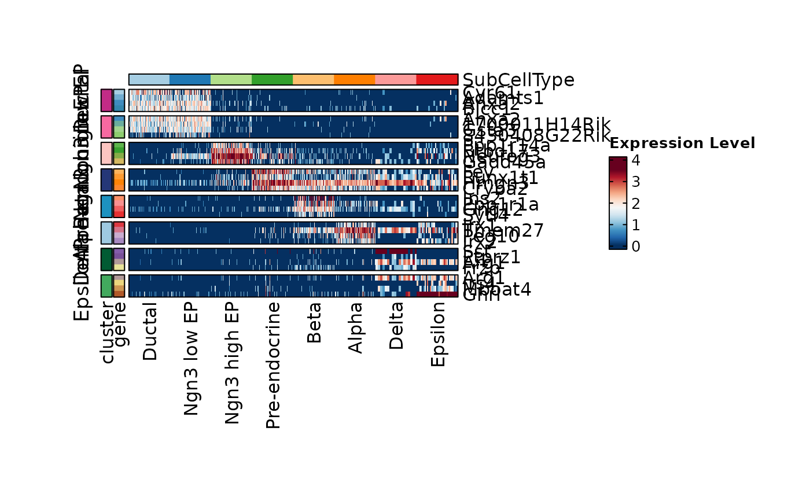
# Use plot_type = "dot" to as a shortcut for heatmap with cell_type = "dot"
FeatureStatPlot(pancreas_sub, features = features, ident = "SubCellType", plot_type = "dot")
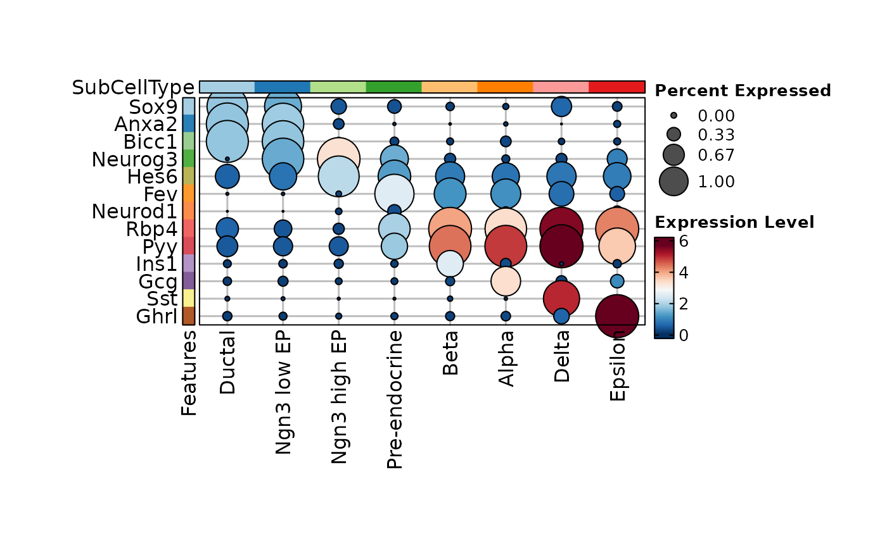
named_features <- list(
Ductal = c("Sox9", "Anxa2", "Bicc1"),
EPs = c("Neurog3", "Hes6"),
`Pre-endocrine` = c("Fev", "Neurod1"),
Endocrine = c("Rbp4", "Pyy"),
Beta = "Ins1", Alpha = "Gcg", Delta = "Sst", Epsilon = "Ghrl"
)
FeatureStatPlot(pancreas_sub, features = named_features, ident = "SubCellType",
plot_type = "heatmap", name = "Expression Level", show_row_names = TRUE)
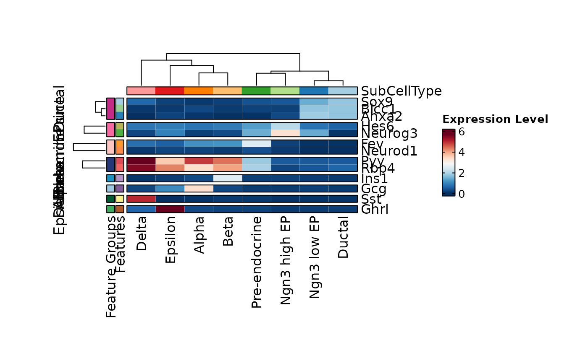
# Correlation plot
FeatureStatPlot(pancreas_sub, features = c("Pyy", "Rbp4"), plot_type = "cor",
anno_items = c("eq", "r2", "spearman"))
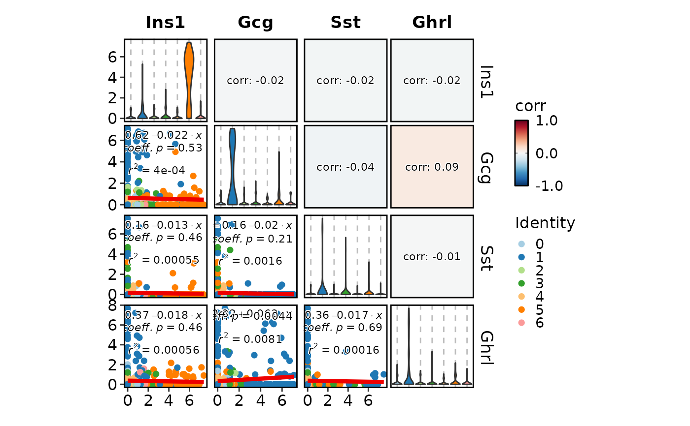
FeatureStatPlot(pancreas_sub, features = c("Ins1", "Gcg", "Sst", "Ghrl"),
plot_type = "cor")
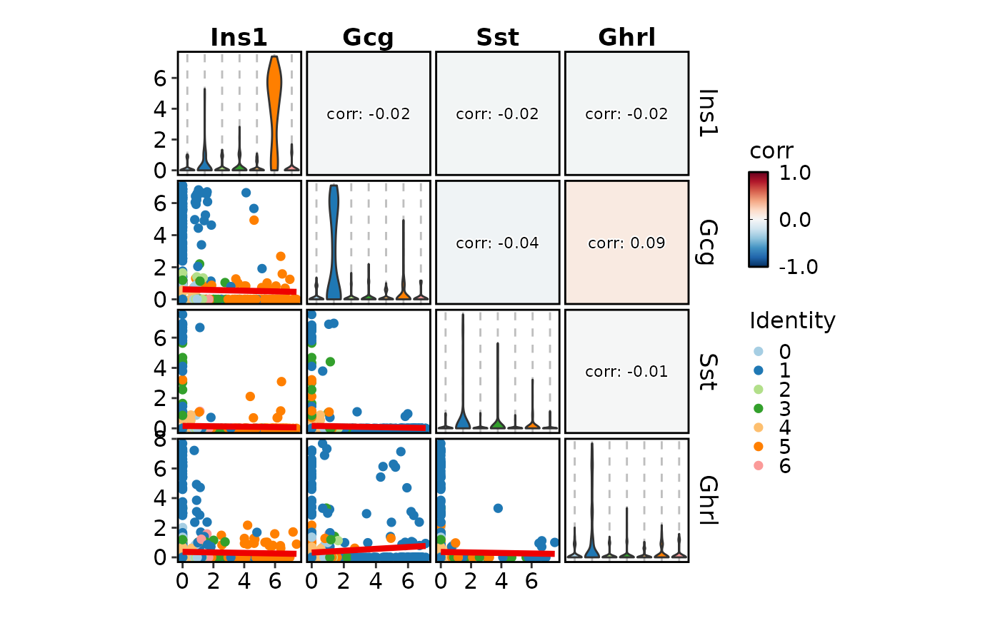
# }